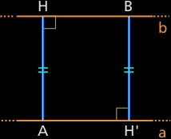

Rettangolo
Definizione 3.6.1. Un rettangolo è un parallelogramma avente quattro angoli congruenti. □
(la definizione di rettangolo si applica anche ai quadrati, perché il quadrato è un caso particolare di rettangolo).
Poiché gli angoli adiacenti a un lato di un parallelogramma sono supplementari, ogni angolo di un ettangolo è un angolo retto.
Di conseguenza, per affermare che un parallelogramma è un rettangolo, è sufficiente dimostrare che ha un angolo retto.
Una proprietà delle diagonali del rettangolo
Teoema 3.6.2 Un rettangolo ha le diagonali congruenti.
Ipotesi ABCD è un rettangolo.
Tesi AC ≅ BD.
Dim. I triangoli ABD e ABC sono rettangoli e hanno rispettivamente congruenti i due cateti, poiché ABCD è un parallelogramma, quindi sono congruenti per il primo criterio di congruenza.
In particolare, risultano congruenti le ipotenuse AC e BD, che sono le diagonali del rettangolo. □

Condizione sufficiente perché un parallelogramma sia un rettangolo
Teorema 3.6.3 Un parallelogramma avente le diagonali congruenti è un rettangolo.
Ipotesi ABCD è un parallelogramma.
Tesi 1. ABCD è un rettangolo 2. AC ≅ BD.
Dim. Consideriamo i triangoli ABD e ABC. Essi hanno
AC ≅ BD per l'ipotesi 1;
BD ≅ AC per l'ipotesi 2;
AB in comune.
Quindi sono congruenti per il terzo criterio.
In particolare, sono congruenti gli angoli DÂB e AB̂C.
ABCD è un parallelogramma, quindi gli angoli  e B̂ sono supplementari e, poiché sono congruenti, ognuno è un angolo retto.
Il parallelogramma ABCD ha gli angoli retti, pertanto è un rettangolo. □
Teorema 3.6.4 In un triangolo rettangolo la mediana relativa all’ipotenusa è congruente a metà ipotenusa.
Ipotesi. 1. CÂB è retto; 2. CM ≅ MB.
Tesi. AM ≅ CM ≅ MB.
Dim. Prolunghiamo la mediana AM di un segmento MD ≅ AM.
AM ≅ MD per costruzione;
CM ≅ MB per ipotesi;
dunque ABCD è un parallelogramma, poiché le diagonali si incontrano nel loro punto medio.CÂB è retto per ipotesi, quindi ABCD è un rettangolo (Essendo un parallelogramma con un angolo retto).
AD ≅ BC per la proprietà delle diagonali del rettangolo.
Pertnato AM ≅ AD/2, ma AD ≅ BC e perciò AM ≅ BC/2 ossia, AM ≅ CM ≅ MB.
La distanza fra rette parallele
Teorema 3.6.4 Date due rette parallele, ogni punto di ciascuna retta ha la stessa distanza dall’altra.
Ipotesi 1. a ⁄⁄ b; 2. AH ⊥ b; 3. BH′⊥ a; Tesi AH ≅ BH′.
Dim. Ogni retta perpendicolare a una delle parallele è perpendicolare anche all’altra, quindi AHBH è un rettangolo.
Esso ha i lati opposti congruenti, di conseguenza AH ≅ BH'. □
Il teorema dimostrato permette di chiamare distanza fra due rette parallele la distanza di un qualsiasi punto di una retta dall’altra. Tale distanza viene anche detta altezza della striscia individuata dalle due parallele.
In un parallelogramma, preso un lato come base, l’altezza è la distanza fra il lato opposto alla base e la retta contenente la base.
heigth = h = DE
Area of Parallelogram = b x h = AB x DE

heigth = h = CE
Area of Parallelogram = b x h = AB x CE

heigth = h = DE
Area of Parallelogram = b x h = BC x DE
heigth = h = AE
Area of Parallelogram = b x h = BC x AE